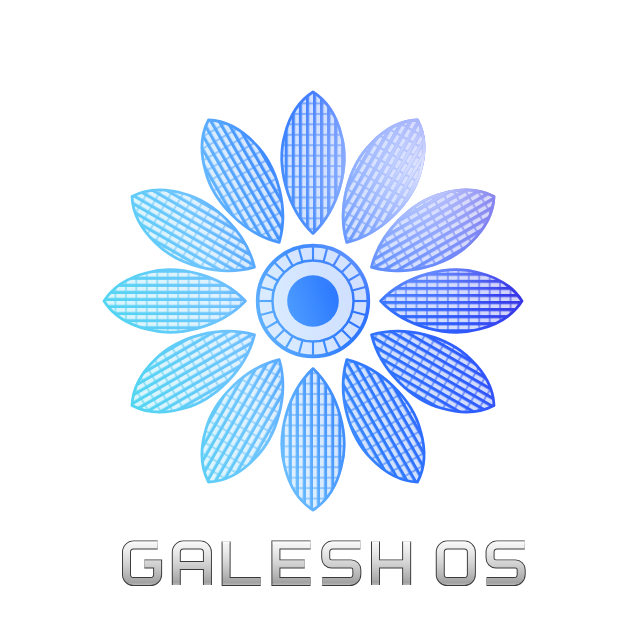

Sistema operativo móvil basado en AOSP 14 · Desarrollado en Paraguay
Pitch Deck 2026 · Beta pública prevista para 2027
Aplicaciones y servicios preinstalados que el usuario no eligió y que consumen memoria, batería y datos.
La fluidez y la autonomía dependen de cada fabricante, con ajustes dispersos u ocultos.
Servicios del sistema con más privilegios de los necesarios y poco control real para el usuario.
Compatible con las aplicaciones Android, con herramientas de rendimiento, batería y privacidad integradas en el propio sistema, no como apps añadidas.
Game Turbo y el clasificador de hardware adaptan los perfiles al equipo y a cada juego.
Battery Guard muestra y gestiona el estado de protección de la batería desde el sistema.
Servicios sin root, SELinux de mínimo privilegio y acceso solo con permisos por firma.
Panel central de rendimiento, batería y modos.
Perfil de juego que termina solo al cerrar el juego.
Protección de la batería integrada en el sistema.
Servicio central del sistema, sin privilegios de root.
Clasificador de hardware que adapta los perfiles al equipo.
Motor central propio (Advanced Core Engine).
Servicio de emparejamiento al tocar dispositivos.
Tienda con catálogo firmado, versión mínima.
Pantalla de inicio propia con el concepto visual.
Logo y animación de arranque propios.
Validados en emulador sobre AOSP 14: cada módulo superó compilación, pruebas en ejecución y congelado con evidencia.
Control Center, Inicio, Quari Store y apps del sistema.
Acceso solo con permiso por firma; cada método verifica a quien llama.
System Control, Game Turbo, Battery Guard: sin root, un proceso por servicio.
Kernel, sensores y recursos del equipo.
SELinux de mínimo privilegio en todo el recorrido: cada servicio accede solo a lo que necesita, sin modos permisivos.
Revisar el estado real antes de tocar nada.
El cambio mínimo, en el componente correcto.
Imagen completa del sistema, sin errores.
Pruebas en ejecución con criterios fijados de antemano.
Versión verificada con sumas de control.
Cada módulo supera un gate de pruebas antes de cerrarse.
Las versiones congeladas se verifican automáticamente.
Lo incompleto queda desactivado hasta validarse.
Versión inicial incluida en la Beta 1.0, prevista para 2027.
Detecta el contacto físico entre dos teléfonos y pide verificar el emparejamiento antes de conectar.
Base validada en emulador; la interfaz se activa en su propia fase, después de la Beta.
El mismo gesto para conectar cualquier dispositivo.
Imagen para emulador con los módulos principales, el tema Galesh y Quari Store.
Nueva pantalla de bloqueo y notificaciones. Primer dispositivo físico, en evaluación.
Rediseño de recientes, volumen y menú de apagado.
Task Space, Touch & Connect multidispositivo y alianzas con fabricantes.
Beta gratuita para uso personal: adopción, comentarios y validación del producto.
Preinstalación de Galesh OS mediante acuerdos de licencia y regalías.
Licencias de los componentes propietarios para uso corporativo.
La base AOSP es abierta; los componentes diferenciales de Galesh OS son propietarios y de código cerrado.
Gabriel Alexander Sharp Brizuela
Fundador y desarrollador principal de Galesh OS